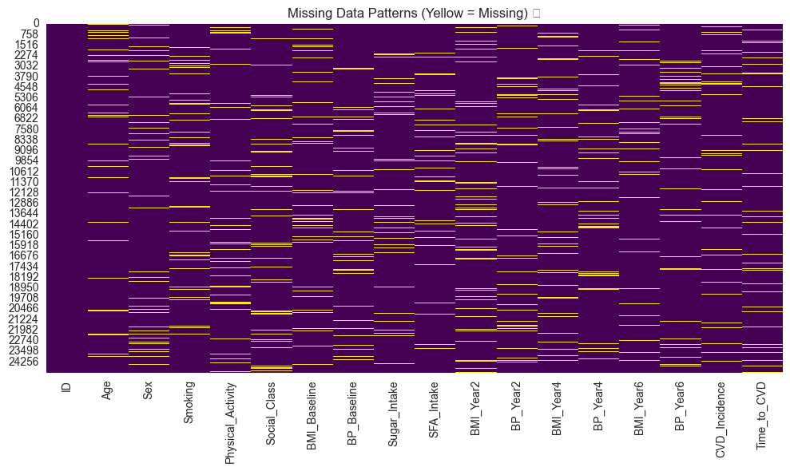

Epidemiological Analysis: Cross-Sectional and Prospective Studies in Nutrition 🥗📊
Welcome to this Jupyter notebook on epidemiological analysis in nutrition science! We’ll explore a large study (n=25,000, age range 45-80) with cross-sectional and prospective designs, focusing on continuous (BMI) and survival (CVD incidence) endpoints. The dataset includes baseline and follow-up data (2, 4, 6 years) on smoking, sex, physical activity, social class (UK ABC12DE), BMI, blood pressure, sugar intake, SFA intake, and CVD incidence, with random missing data.
In this notebook, we’ll: - Summarise baseline characteristics with Table 1 🧩 - Analyse missing data to understand patterns - Perform cross-sectional analysis using Frequentist and Bayesian regression (baseline BMI) - Conduct survival analysis for CVD incidence (Frequentist and Bayesian) - Analyse prospective changes in BMI and CVD incidence (Frequentist and Bayesian regression) 📈
Let’s dive in and explore this epidemiological dataset!
Step 1: Load the Dataset and Libraries 📦
First, let’s load the necessary libraries and the simulated dataset.
# Import libraries for analysis# Setup for Google Colab: Fetch datasets automatically or manually%run ../../bootstrap.py # installs requirements + editable packageimport fns_toolkit as fnsimport numpy as npimport pandas as pdimport matplotlib.pyplot as pltimport seaborn as snsfrom sklearn.linear_model import LinearRegressionfrom sklearn.preprocessing import LabelEncoderfrom lifelines import CoxPHFitterimport pymc as pmimport arviz as azfrom statsmodels.formula.api import mixedlm# Set seaborn style for clean visualssns.set_style("whitegrid")# Load the datasetdata = fns.get_dataset('epidemiological_study')# Display the first few rowsdata.head()
ID
Age
Sex
Smoking
Physical_Activity
Social_Class
BMI_Baseline
BP_Baseline
Sugar_Intake
SFA_Intake
BMI_Year2
BP_Year2
BMI_Year4
BP_Year4
BMI_Year6
BP_Year6
CVD_Incidence
Time_to_CVD
0
1
NaN
F
No
Medium
E
24.812278
134.975984
53.469757
32.355014
24.412442
139.939191
27.444676
140.217477
26.839378
130.356634
0.0
6.0
1
2
70.0
M
No
Medium
E
29.167431
121.108245
56.627170
45.892542
29.541868
122.305808
30.686958
126.271005
30.687262
116.188290
0.0
6.0
2
3
NaN
F
No
High
D
28.636861
127.287078
45.976005
27.468894
27.955268
131.731170
28.295145
128.151927
29.985429
119.701608
0.0
6.0
3
4
NaN
F
No
High
C1
30.749889
125.012160
49.596112
29.144261
32.462470
125.533971
31.335076
128.504605
31.907326
130.728587
0.0
6.0
4
5
48.0
F
No
Medium
D
30.181594
141.078214
51.031441
38.224927
30.627904
141.412704
31.440784
137.994643
29.890357
134.377679
0.0
6.0
Step 2: Table 1 - Baseline Characteristics 📊
Let’s create Table 1 to summarise the baseline characteristics of the study population, including means (SD) for continuous variables and counts (%) for categorical variables.
Table 1: Baseline Characteristics
Continuous Variables:
Mean (SD)
Age 62.57 (10.42)
BMI_Baseline 27.04 (4.03)
BP_Baseline 130.01 (14.96)
Sugar_Intake 50.1 (9.92)
SFA_Intake 29.9 (8.05)
Categorical Variables:
Sex:
Count (%)
Sex
M 11525 (46.1%)
F 11516 (46.06%)
NaN 1959 (7.84%)
Smoking:
Count (%)
Smoking
No 16028 (64.11%)
Yes 6977 (27.91%)
NaN 1995 (7.98%)
Physical_Activity:
Count (%)
Physical_Activity
Low 9270 (37.08%)
Medium 9097 (36.39%)
High 4613 (18.45%)
NaN 2020 (8.08%)
Social_Class:
Count (%)
Social_Class
C2 5854 (23.42%)
C1 5770 (23.08%)
D 3458 (13.83%)
B 3436 (13.74%)
E 2293 (9.17%)
A 2206 (8.82%)
NaN 1983 (7.93%)
Step 3: Analysis of Missing Data 🔎
Let’s assess the extent and pattern of missing data in the dataset to understand potential biases.
# Calculate percentage of missing data for each variablemissing_data = data.isna().mean() *100missing_summary = pd.DataFrame({'Missing (%)': missing_data.round(2)})# Display missing data summaryprint("Missing Data Analysis:")print(missing_summary[missing_summary['Missing (%)'] >0])# Visualize missing data patternsplt.figure(figsize=(10, 6))sns.heatmap(data.isna(), cbar=False, cmap='viridis')plt.title('Missing Data Patterns (Yellow = Missing) 📉')plt.tight_layout()plt.show()
/var/folders/jr/p60s3gd574d_f62sc7_0bzfm0000gq/T/ipykernel_61181/1996860901.py:15: UserWarning: Glyph 128201 (\N{CHART WITH DOWNWARDS TREND}) missing from font(s) Arial.
plt.tight_layout()
/Users/gunter/Documents/data-analysis-toolkit-FNS/venv/lib/python3.9/site-packages/IPython/core/pylabtools.py:152: UserWarning: Glyph 128201 (\N{CHART WITH DOWNWARDS TREND}) missing from font(s) Arial.
fig.canvas.print_figure(bytes_io, **kw)

Step 4: Cross-Sectional Analysis - Baseline BMI 🧮
Let’s perform a cross-sectional analysis of baseline BMI, using Frequentist (linear regression) and Bayesian regression, with predictors: age, sex, smoking, physical activity, social class, sugar intake, and SFA intake.
Data Preparation
First, we’ll preprocess the data, encoding categorical variables and handling missing data (simple imputation for this example).
# Prepare data for cross-sectional analysiscross_sectional_data = data[['BMI_Baseline', 'Age', 'Sex', 'Smoking', 'Physical_Activity', 'Social_Class', 'Sugar_Intake', 'SFA_Intake']].copy()# Encode categorical variablesle = LabelEncoder()cross_sectional_data['Sex'] = le.fit_transform(cross_sectional_data['Sex'].astype(str))cross_sectional_data['Smoking'] = le.fit_transform(cross_sectional_data['Smoking'].astype(str))cross_sectional_data['Physical_Activity'] = cross_sectional_data['Physical_Activity'].map({'Low': 0, 'Medium': 1, 'High': 2, np.nan: 0})cross_sectional_data['Social_Class'] = cross_sectional_data['Social_Class'].map({'A': 1, 'B': 2, 'C1': 3, 'C2': 4, 'D': 5, 'E': 6, np.nan: 3})# Impute missing data with mean for simplicitycross_sectional_data.fillna(cross_sectional_data.mean(), inplace=True)# Define predictors and outcomeX_cross = cross_sectional_data.drop('BMI_Baseline', axis=1)y_cross = cross_sectional_data['BMI_Baseline']
Frequentist Linear Regression
We’ll use scikit-learn’s LinearRegression to model baseline BMI.
# Frequentist linear regressionfreq_model = LinearRegression()freq_model.fit(X_cross, y_cross)# Coefficients and interceptfreq_coefs = pd.DataFrame({'Predictor': X_cross.columns,'Coefficient': freq_model.coef_})print("Frequentist Linear Regression Results:")print(f"Intercept: {freq_model.intercept_:.2f}")print(freq_coefs)
Frequentist Linear Regression Results:
Intercept: 26.94
Predictor Coefficient
0 Age 0.001226
1 Sex -0.018906
2 Smoking -0.018545
3 Physical_Activity 0.005869
4 Social_Class 0.019409
5 Sugar_Intake -0.002303
6 SFA_Intake 0.002939
Bayesian Linear Regression
We’ll use PyMC to model the same relationship, with weakly informative priors.
Let’s perform survival analysis for CVD incidence, using Frequentist (Cox proportional hazards) and Bayesian survival regression, with the same predictors.
Data Preparation
We’ll use the same predictors, ensuring proper encoding and imputation.
Let’s analyze prospective changes in BMI over time and their association with CVD incidence, using Frequentist (mixed-effects model) and Bayesian regression.
Data Preparation
We’ll reshape the data into long format for prospective analysis.
Table 1: Summarised baseline characteristics, providing a clear overview of the study population.
Missing Data: Identified patterns of missingness (~8% per variable), which should be considered in analysis (e.g., imputation strategies).
Cross-Sectional Analysis: Frequentist and Bayesian regression showed similar predictors of baseline BMI, with Bayesian providing uncertainty quantification.
Survival Analysis: Cox and Bayesian survival models highlighted SFA intake as a key predictor of CVD incidence, consistent with the simulated association.
Prospective Analysis: Mixed-effects models confirmed sugar intake’s association with BMI increase, and logistic regression identified predictors of CVD incidence, with Bayesian models offering probabilistic insights.
Next Steps
Advanced Imputation: Use multiple imputation for missing data to reduce bias.
Interaction Terms: Explore interactions (e.g., age × SFA intake) in survival models.
Sensitivity Analysis: Test the impact of different priors in Bayesian models.
Further Outcomes: Analyze other outcomes, like blood pressure changes over time.
Keep exploring epidemiological methods to uncover insights in nutrition science! 🥕📉